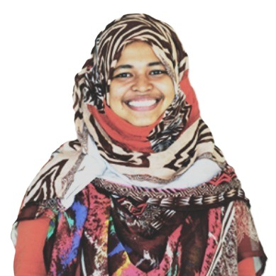

My current work focuses primarily on user interfaces and interactions for Augmented Reality in diverse mobility and usage contexts. My research is conducted primarily through the lens of user performance and user experience in design and Human-Computer Interaction (HCI). My research aims to provide access to digital information within an Augmented Reality environment anytime, anywhere through XR headsets. I have published at top HCI venues, including conferences such as CHI and ISMAR, and journals such as the International Journal of Human-Computer Studies (IJHCS) and IEEE Transactions on Visualization and Computer Graphics (TVCG). I bring more than five years of specialized research experience in Artificial Intelligence (AI), Machine Learning (ML), and Natural Language Processing (NLP), gained before I began my PhD in HCI.
Research Impact
- Citations: 452
- h-index: 12
- i10-index: 14
Google Scholar, as of September 2026.
View profile
Recent Publications
Peer-Reviewed Conference Papers
Peer-Reviewed Journal Papers
For the full list of publications, please check my Google Scholar profile.
Other Research Experience
Research Assistant (2026 – Present)
Okanagan Visualization and Interaction (OVI) Lab,
University of British Columbia – Okanagan
As a research assistant, my responsibilities include:
- Reviewing existing literature on mobile and wearable spatial
interactions and interfaces
- Identifying research gaps, defining research problems, and
identifying associated contexts
- Creating research plans and protocols for mobile and wearable
applications
- Designing and conducting user studies and applying quantitative
and qualitative data analyses
- Writing project reports and publishing results in top-ranked
Human-Computer Interaction venues
- Mentoring undergraduate students and interns
Graduate Research Assistant (2021 – 2025)
Okanagan Visualization and Interaction (OVI) Lab,
University of British Columbia – Okanagan
As a graduate research assistant, my responsibilities included:
- Creating research plans and prototypes for mobile and wearable
applications
- Designing and conducting user studies and applying quantitative
and qualitative data analyses
- Writing project reports and publishing results in top-ranked
Human-Computer Interaction venues
- Mentoring undergraduate students and interns
Research Assistant (2023 – 2024)
Project:
Navigating the Intersection of Digital Technology, Travel Behavior,
and Smartphone Usage Implications
A collaboration between UBC Integrated Transportation Research
(UiTR) Lab and Okanagan Visualization and Interaction (OVI) Lab,
University of British Columbia – Okanagan.
As a research assistant, my responsibilities included:
- Performing background research
- Designing research plans and prototypes for mobile applications
(iOS and Android)
- Data analysis, reporting, and writing project reports
- Writing applications for research ethics approval
MITACS Accelerate Research Intern (2022)
Advisors: Apurva Narayan and Khalad Hasan
University of British Columbia – Okanagan
As an intern, my responsibilities included:
- Designing and conducting user studies
- Analyzing data and reporting results